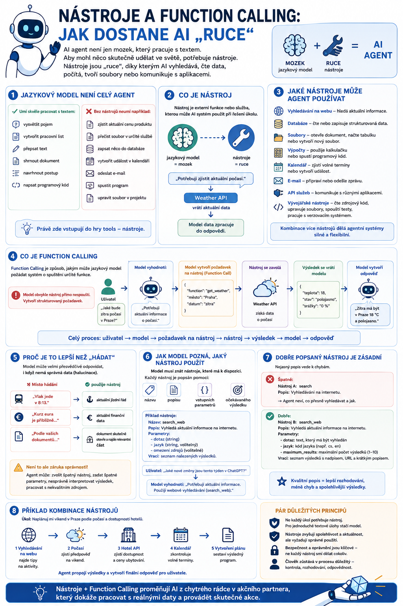

V předchozím článku jsme si ukázali agentní smyčku: AI agent pochopí zadání, naplánuje další krok, provede akci a zkontroluje výsledek.
Jenže samotný jazykový model toho ve skutečném světě mnoho „neudělá“. Umí velmi dobře pracovat s textem, ale neumí sám od sebe otevřít kalendář, zjistit aktuální počasí nebo změnit soubor. K tomu potřebuje nástroje.

Jazykový model není celý agent
Když se bavíme s běžným chatbotem, snadno získáme dojem, že AI „něco dělá“.
Ve skutečnosti jazykový model především vytváří další text podle zadání a dostupného kontextu.
Dokáže například:
- vysvětlit pojem,
- vytvořit pracovní list,
- přepsat text,
- shrnout dokument,
- navrhnout postup,
- napsat programový kód.
Ale pokud nemá k dispozici vhodný nástroj, nemůže například skutečně:
- zjistit aktuální cenu produktu,
- přečíst soubor uložený v určité službě,
- zapsat něco do databáze,
- vytvořit událost v kalendáři,
- odeslat e-mail,
- spustit program,
- upravit soubor v projektu.
Právě zde vstupují do hry tools, tedy nástroje.
Co je nástroj
Nástroj je externí funkce nebo služba, kterou může AI systém použít při řešení úkolu.
Můžeme si to představit velmi jednoduše:
nástroje = ruce
Není to technicky úplně přesná analogie, ale pro pochopení funguje dobře.
Model může rozhodnout:
Potřebuji zjistit aktuální počasí.
A místo toho, aby si údaj vymyslel nebo spoléhal na zastaralé informace, použije nástroj:
Ten vrátí aktuální data a model je následně zpracuje do odpovědi.
Jaké nástroje může agent používat
Možností je celá řada.
Typické nástroje zahrnují například:
- Vyhledávání na webu – agent může hledat aktuální informace.
- Databáze – může číst nebo zapisovat strukturovaná data.
- Soubory – může otevřít dokument, načíst tabulku nebo vytvořit nový soubor.
- Výpočty – může použít kalkulačku nebo spustit programový kód.
- Kalendář – může zjistit volné termíny nebo vytvořit událost.
- E-mail – může připravit nebo odeslat zprávu.
- API služeb – může komunikovat s různými aplikacemi.
- Vývojářské nástroje – může číst zdrojový kód, upravovat soubory, spouštět testy nebo pracovat s verzovacím systémem.
A právě kombinace více nástrojů je jedním z důvodů, proč jsou agentní systémy tak zajímavé.
Co je Function Calling
Pojem Function Calling označuje způsob, jakým může jazykový model požádat systém o spuštění určité funkce.
Důležité je pochopit jednu věc:
Model obvykle nástroj přímo nespouští.
Místo toho vytvoří strukturovaný požadavek.
Například uživatel napíše:
„Jaké bude zítra počasí v Praze?“
Model vyhodnotí:
Potřebuji aktuální informace o počasí.
A vytvoří požadavek přibližně ve smyslu:
město: Praha
datum: zítra
Aplikace potom tuto funkci skutečně zavolá.
Výsledek se vrátí modelu.
Model z něj vytvoří běžnou odpověď:
Zítra má být v Praze…
Celý proces tedy vypadá asi takto:
Proč je to lepší než „hádat“
Jazykové modely mají jeden zásadní problém.
Umějí velmi přesvědčivě vytvořit odpověď, i když nemají správná data.
To vede k takzvaným halucinacím.
Nástroje mohou tento problém výrazně omezit.
Místo toho, aby model hádal:
„Vlak jede v 8:13.“
může agent použít službu s aktuálním jízdním řádem.
Místo:
„Kurz eura je přibližně…“
může použít aktuální finanční data.
Místo:
„Podle vašich dokumentů…“
může dokument skutečně otevřít a najít relevantní část.
To ale neznamená, že použití nástroje automaticky zaručuje správnost.
Agent může:
- zvolit špatný nástroj,
- zadat špatné parametry,
- nesprávně interpretovat výsledek,
- pracovat s nekvalitním zdrojem.
Proto je stále důležitá kontrola.
Jak model pozná, jaký nástroj použít
Aby mohl agent nástroje používat, musí vědět, jaké nástroje má k dispozici.
Každý nástroj bývá popsán například pomocí:
- názvu,
- popisu,
- vstupních parametrů,
- očekávaného výsledku.
Představme si nástroj:
Popis:
Vyhledá aktuální informace na internetu.
Parametry:
jazyk
případně omezení zdrojů
Model dostane tento popis jako součást svého kontextu.
Když potom uživatel napíše:
„Jaké nové změny jsou tento týden v ChatGPT?“
model může vyhodnotit:
Potřebuji aktuální informace. Použiji webové vyhledávání.
Dobře popsaný nástroj je zásadní
Pokud je popis nástroje nejasný, agent jej může používat špatně.
Například:
To není příliš užitečné.
Co hledá? Kde hledá? Jaký výsledek vrací?
Lepší je:
Vyhledá relevantní pasáže ve školních směrnicích a interních dokumentech. Používej jej pouze pro dotazy týkající se školních pravidel, procesů a interních postupů.
Agent tak lépe pozná, kdy má nástroj použít.
To je velmi důležité při tvorbě vlastních agentů.
Příklad ze školy
Představme si zadání:
„Zjisti, jaké povinnosti má třídní učitel při omlouvání absence.“
Běžný chatbot může odpovědět podle obecných znalostí.
Agent s přístupem ke školním dokumentům může postupovat jinak.
1. Vyhodnotí zadání
Jde o otázku na interní pravidla školy.
2. Vybere nástroj
Použije například:
3. Nástroj vyhledá dokumenty
Najde například:
- školní řád,
- organizační směrnici,
- klasifikační řád.
4. Vrátí relevantní části
Agent je přečte.
5. Vytvoří odpověď
A může uvést:
Podle školního řádu…
To je zásadně lepší než odpověď založená pouze na obecných znalostech modelu.
Nástroje mohou také provádět akce
Doposud jsme mluvili hlavně o získávání informací.
Nástroje ale mohou dělat mnohem víc.
Například:
přečte dokument.
Ale:
už jej změní.
Další příklady:
- find_calendar_event najde událost, ale create_calendar_event událost vytvoří.
- search_email vyhledá zprávu, ale send_email zprávu odešle.
A právě v tomto okamžiku se významně mění otázka bezpečnosti.
Čtení není totéž co zápis
U nástrojů je velmi užitečné rozlišovat:
Read
Agent pouze získává informace.
Například:
- čte dokument,
- hledá v databázi,
- kontroluje kalendář.
Riziko bývá nižší.
Write
Agent něco mění.
Například:
- upravuje dokument,
- zapisuje do databáze,
- odesílá zprávu,
- maže soubor.
Riziko je výrazně vyšší.
A právě zde by měl být často zapojen člověk.
Human in the loop
U důležitých akcí může agent pracovat například takto:
Připravil jsem e-mail pro rodiče. Chcete jej odeslat?
Teprve po potvrzení uživatelem agent použije nástroj send_email.
Stejný princip lze použít při:
- publikování obsahu,
- mazání souborů,
- objednávkách,
- změnách dat,
- odesílání formulářů,
- finančních operacích.
Rozumný agent tedy není ten, který může všechno.
Rozumný agent je ten, který má právě tolik oprávnění, kolik potřebuje.
Princip minimálních oprávnění
V informatice se používá princip:
tedy princip minimálních oprávnění.
Znamená to, že systém dostane pouze taková oprávnění, která skutečně potřebuje ke své práci.
Pokud agent potřebuje pouze číst dokumenty, nemá důvod mít oprávnění je mazat.
Pokud má připravovat koncepty e-mailů, nemusí mít právo je automaticky odesílat.
To je jeden z nejdůležitějších bezpečnostních principů agentních systémů.
Nástroj nemusí být internetová služba
Když se řekne „tool“, člověk si často představí nějaké API.
Ale nástrojem může být prakticky jakákoli funkce, kterou systém agentovi zpřístupní.
Například:
- calculate_grade – spočítá známku podle bodového hodnocení.
- generate_pdf – vytvoří PDF.
- get_current_topic – zjistí aktuální téma z tematického plánu.
- create_student_version – vytvoří žákovskou verzi pracovního listu.
- check_accessibility – zkontroluje srozumitelnost materiálu.
Z jednotlivých malých nástrojů potom můžeme stavět mnohem složitější pracovní postupy.
A tady začíná být agent opravdu zajímavý
Představme si, že má k dispozici pět nástrojů:
- vyhledej téma v tematickém plánu,
- vyhledej materiály,
- vytvoř dokument,
- zkontroluj materiál,
- ulož soubor.
Uživatel nemusí říkat:
Teď nástroj 2.
Teď vytvoř dokument.
Teď ho zkontroluj.
Může zadat pouze:
„Připrav mi materiály na zítřejší hodinu.“
Agent sám rozhodne, které nástroje a v jakém pořadí použije.
A právě to je podstata agentní práce.
Tools versus automatizace
Možná vás napadne:
Není to jednoduše automatizace?
Částečně ano.
Rozdíl je hlavně v tom, kdo rozhoduje o postupu.
Klasická automatizace bývá pevně naprogramovaná:
Agentní systém může rozhodovat dynamicky:
Mám tento cíl. Který z dostupných nástrojů je teď nejvhodnější?
To umožňuje řešit úkoly, jejichž přesný průběh nemusíme znát předem.
Nástroje ve vibe codingu
V coding agentech je používání nástrojů vidět velmi názorně.
Coding agent může mít například nástroje:
- číst soubory,
- zapisovat do souborů,
- vyhledávat v projektu,
- spustit terminál,
- spustit testy,
- zobrazit chyby,
- pracovat s verzovacím systémem.
Uživatel zadá:
„Přidej na stránku možnost přepnout mezi světlým a tmavým režimem.“
Agent:
- prohledá projekt,
- najde správné soubory,
- upraví kód,
- spustí aplikaci,
- zjistí chybu,
- upraví řešení,
- znovu otestuje.
Nástroje jsou tedy praktickým prostředkem, kterým agent provádí jednotlivé kroky agentní smyčky.
Co jsou API
V souvislosti s nástroji velmi často narazíme na další zkratku:
API je rozhraní, přes které spolu mohou komunikovat různé aplikace.
Můžeme si jej představit jako předem dohodnutý způsob, jak jedna služba požádá jinou službu o určitou informaci nebo akci.
Například:
Dej mi aktuální předpověď počasí pro Prahu.
API počasí:
Zde jsou aktuální data.
AI aplikace:
Vytvořím z nich odpověď pro uživatele.
API tedy často funguje jako most mezi agentem a externí službou.
A jak s tím souvisí MCP?
Tady se dostáváme k problému.
Představme si, že chceme propojit AI s:
- Google Drive,
- databází,
- GitHubem,
- kalendářem,
- interním systémem,
- vyhledávačem,
- několika vlastními nástroji.
Každou integraci můžeme vytvořit zvlášť.
Jenže brzy vznikne pěkná technická džungle.
Každý systém má jiné rozhraní.
Každá integrace se musí samostatně vytvořit a udržovat.
Právě proto vznikají standardy, které se snaží propojení AI s nástroji sjednotit.
A jedním z nejdůležitějších je dnes:
K němu se dostaneme v samostatném článku.
Nejdřív si ale ještě musíme vysvětlit dvě věci, bez kterých agenti nedávají úplný smysl:
Zapamatujte si
Samotný jazykový model hlavně vytváří a zpracovává informace.
Nástroje mu umožňují získávat aktuální data a provádět skutečné akce.
Function Calling je mechanismus, kterým model sdělí systému:
„Pro tento úkol potřebuji použít právě tento nástroj s těmito parametry.“
A právě kombinace:
je základem velké části dnešních AI agentů.
Co bude následovat
Nástroje jsme agentovi dali.
Jenže vzniká další problém.
Co když potřebujeme, aby věděl, co jsme řešili minulý týden? Co když má znát preference uživatele? A jak může pracovat s informacemi, které vůbec nejsou součástí jeho původního tréninku?
V příštím díle se proto podíváme na:
A tady bude potřeba rozlišit několik věcí, které se dnes velmi často házejí do jednoho pytle: kontext, historie konverzace, dlouhodobá paměť, databáze a skutečné učení modelu.